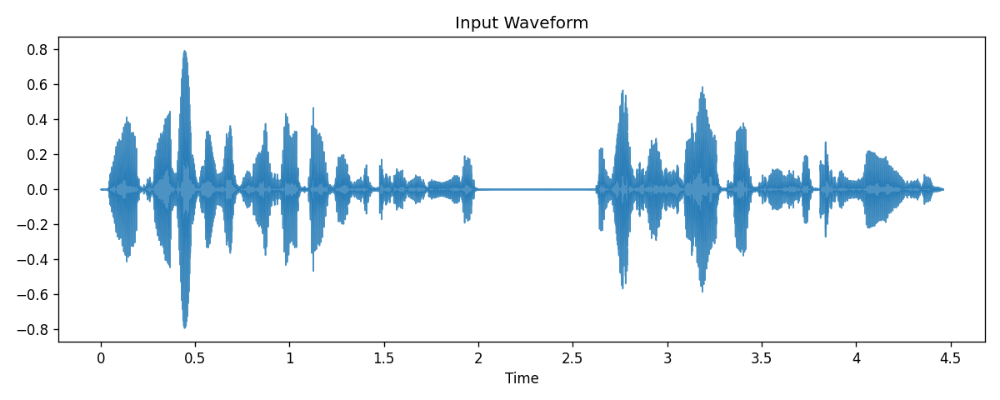
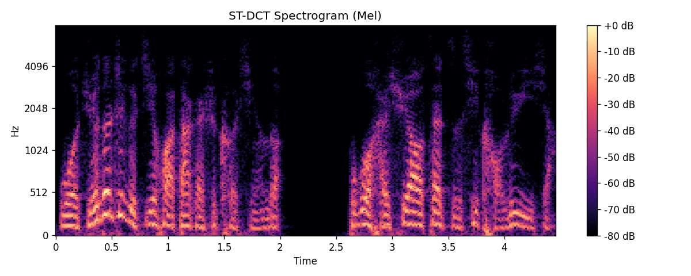
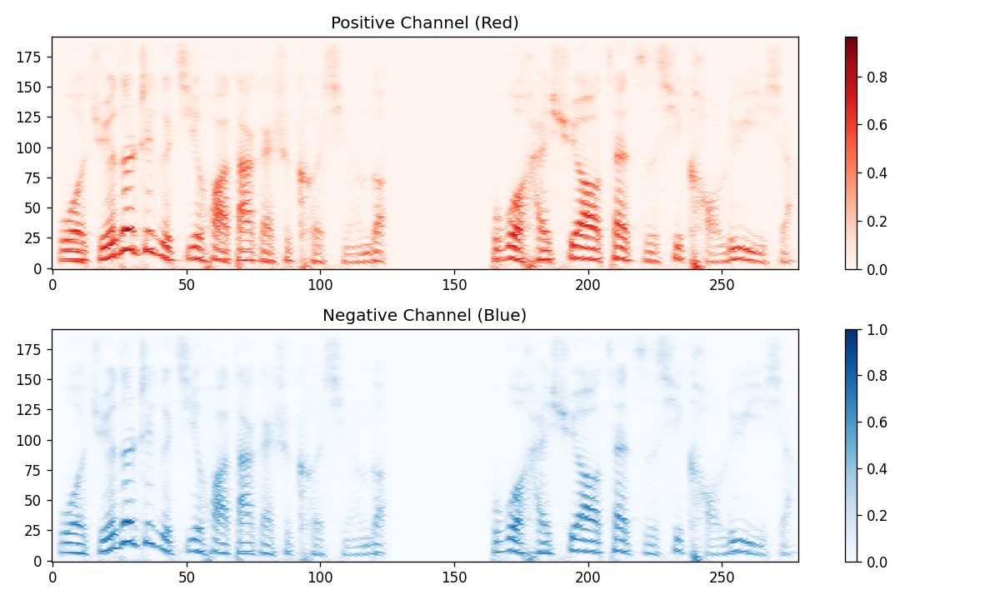

1. 重建结果 (Reconstruction)
PSNR: -- dB
从图像表示解码并与原始音频对比。
重建音频
原始音频 (参考):
用于音频到图像编码的短时离散余弦变换 (Short-Time Discrete Cosine Transform)
从图像表示解码并与原始音频对比。
原始音频 (参考):
输入文件: input.wav

输入音频的波形视图。
音频使用 ST-DCT-II 进行变换，采用 75% 重叠的 Hann 窗。

重建的频谱图 (dB 刻度)。
正系数存储在 红色 (Red) 通道，负系数存储在 蓝色 (Blue) 通道。这保留了对重建至关重要的符号/相位信息。

上图: 正分量 (红), 下图: 负分量 (蓝)。经过 Mu-law 压缩。